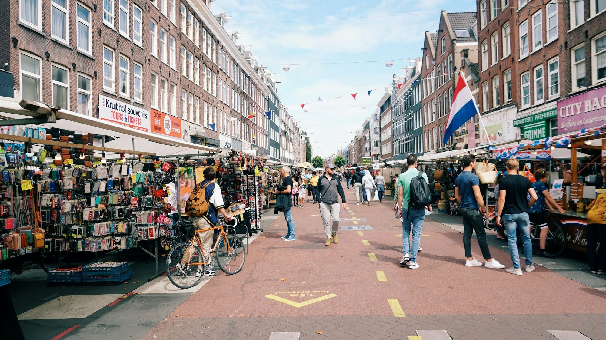
大愚Matcha bar · De Pijp & Oost · Amsterdam
Stone-milled Uji matcha,poured over cold milk.
Move to stir the inkTouch to stir the ink
Scroll to pour0%
二Five drinks01 / 05
Milk or oat milk · less sweet on request
三 · 茶筅chasen
Whisk it
yourself.
Move your cursor over the bowl in quick zig-zags, the way it's done behind the bar. The faster you go, the finer the foam.
Swipe over the bowl in quick zig-zags, or keep scrolling and we'll whisk for you.
Foam0%
Lovely foam. Ours is finer still: come and taste it.
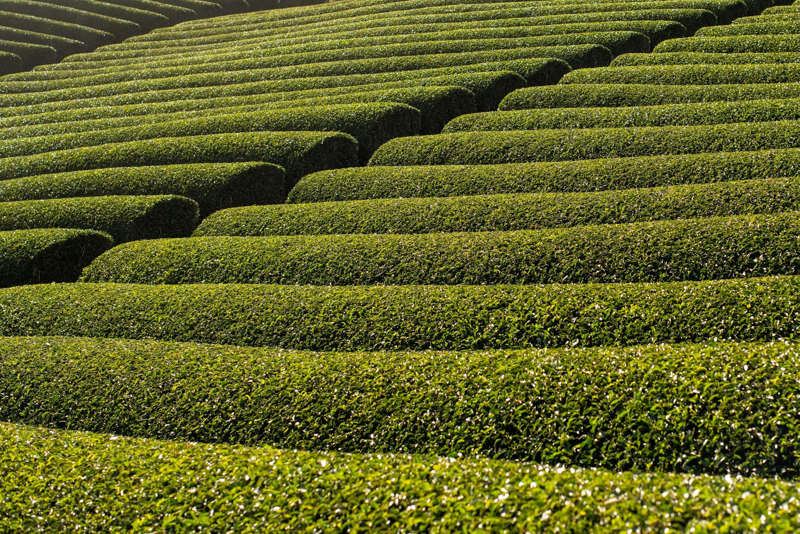
四 · 宇治Uji
Grown in Uji,
just south of Kyoto.
Uji has been growing tea for some eight hundred years. In the last weeks before picking, the bushes are shaded, which keeps the leaf soft, sweet and deep green.
Milled between
granite.
A stone mill turns slowly: a few dozen grams an hour. Slow enough that the leaf never warms up.
- Organic有機
- Stone-milled石臼挽き
- Uji, Kyoto宇治
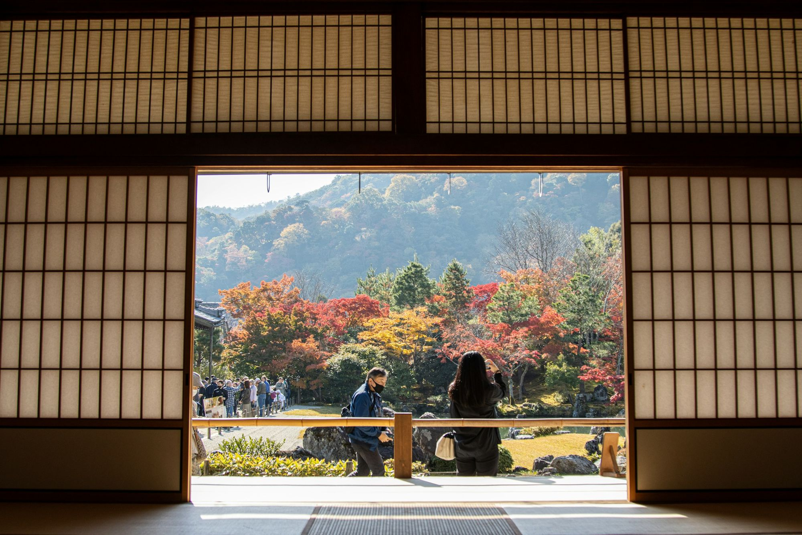

五 · 名The name
‘Great fool.’
A compliment.
In Zen, taigu is no insult. The monk-poet Ryōkan (1758–1831) took it as his name: someone who lives simply, plays with children and has nothing to prove.
裏を見せ
表を見せて
散る紅葉
Showing its back, then its face: a maple leaf, falling.A verse Ryōkan is said to have spoken at the end of his life. Translation ours.
4.4★ De Pijp4.3★ Oost740+ Google reviews2 houses
声Guests
“Love their matcha because the concentration is very high.”
Google review · De Pijp
“It actually tasted like matcha! (not those watered down ones)”
Google review · Oost
“If you truly know and appreciate a real matcha, this one is for you.”
Google review · De Pijp
“Very authentic and truly lovely experience.”
Google review · Oost
“Tatami-style seating that created a comfortable and authentic feel.”
Google review · De Pijp
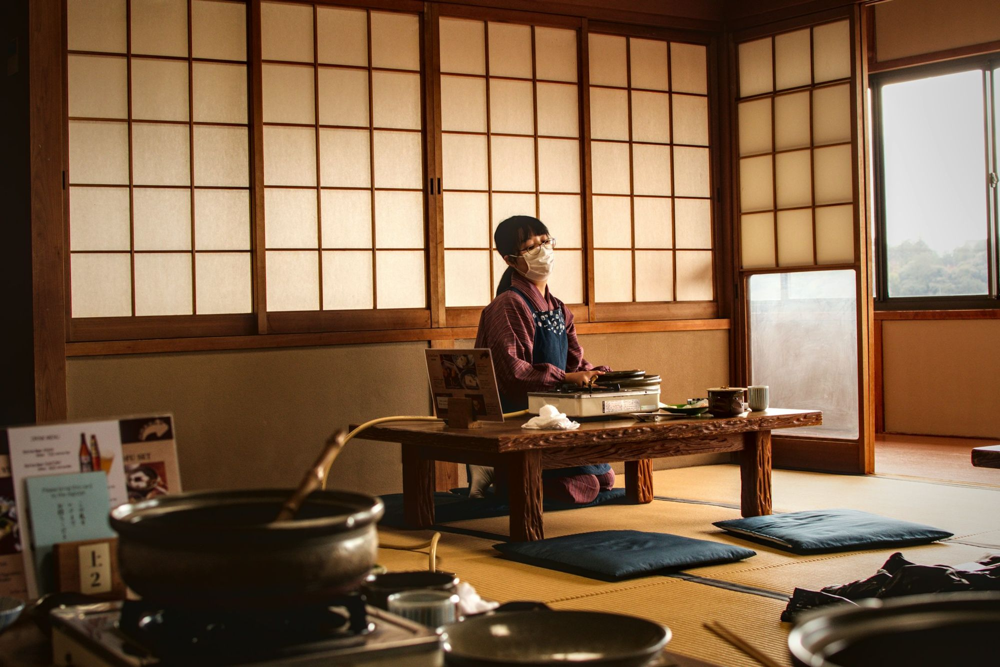
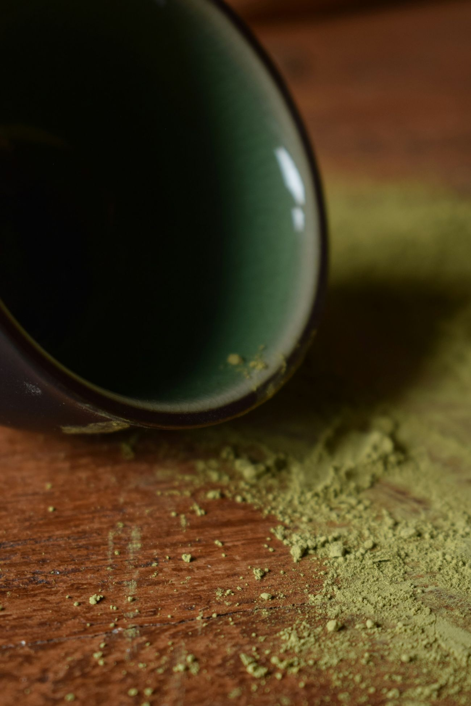
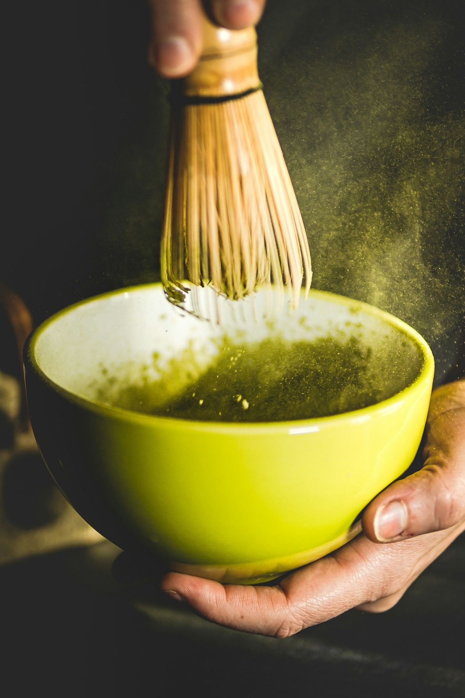
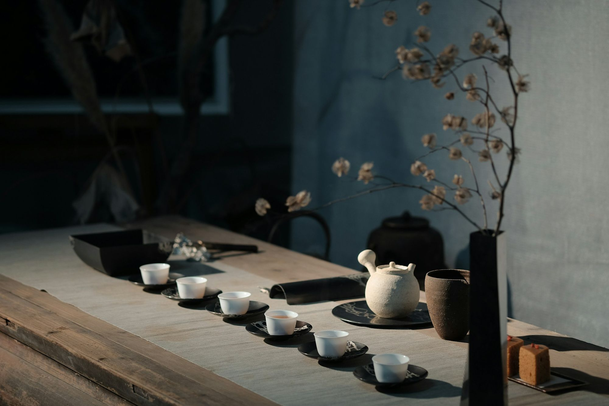
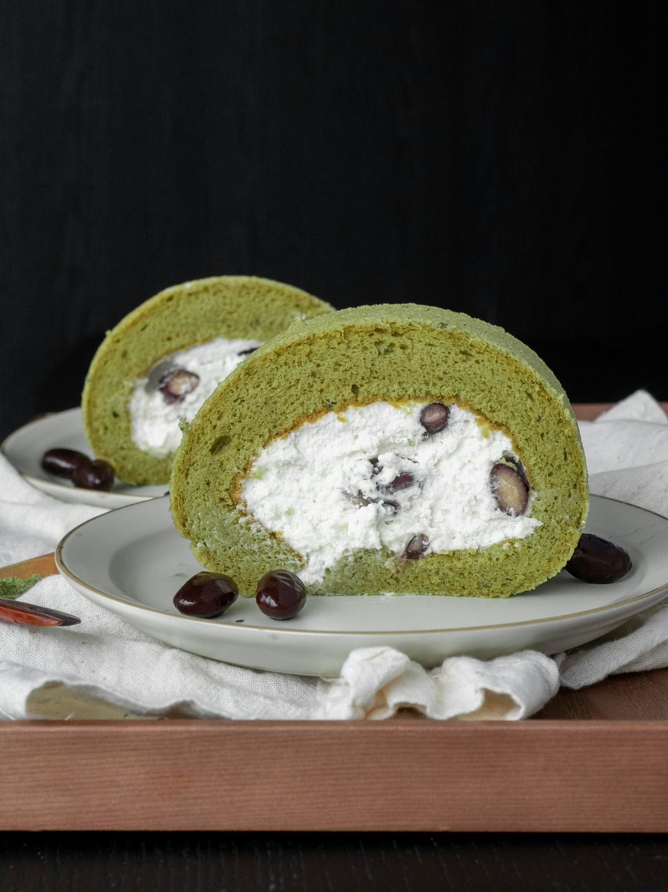
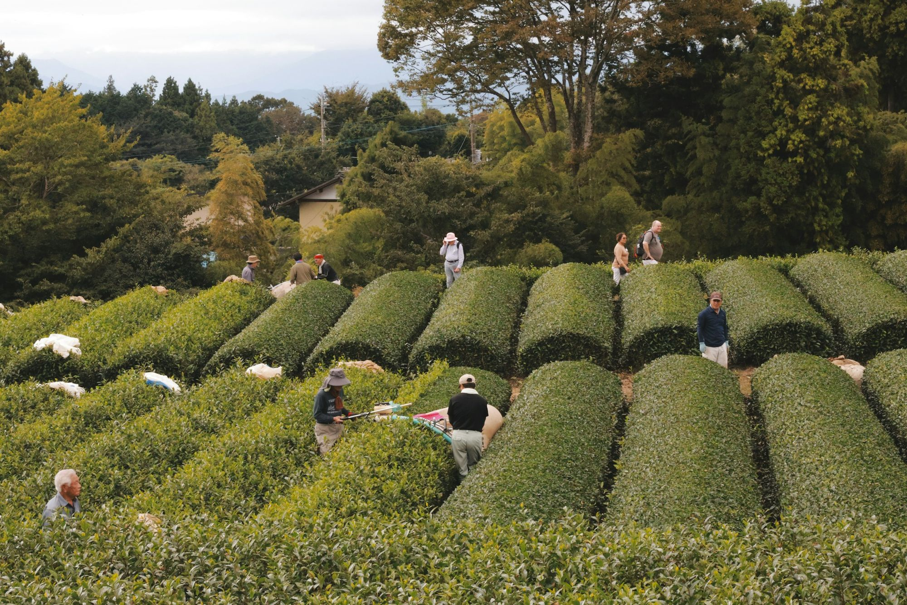
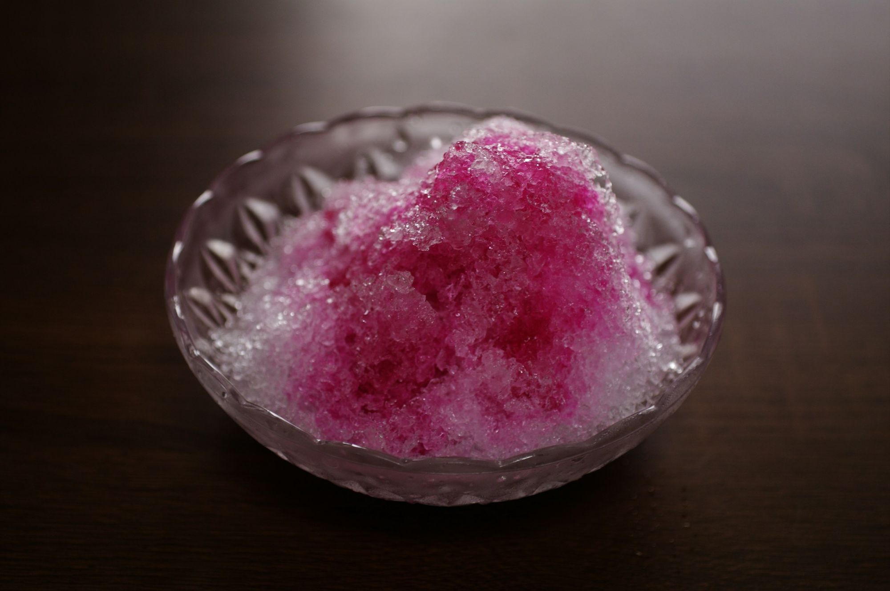
一期一会One time, one meeting. Photos: Unsplash, for mood.
七 · 二店Two houses
Come
by.
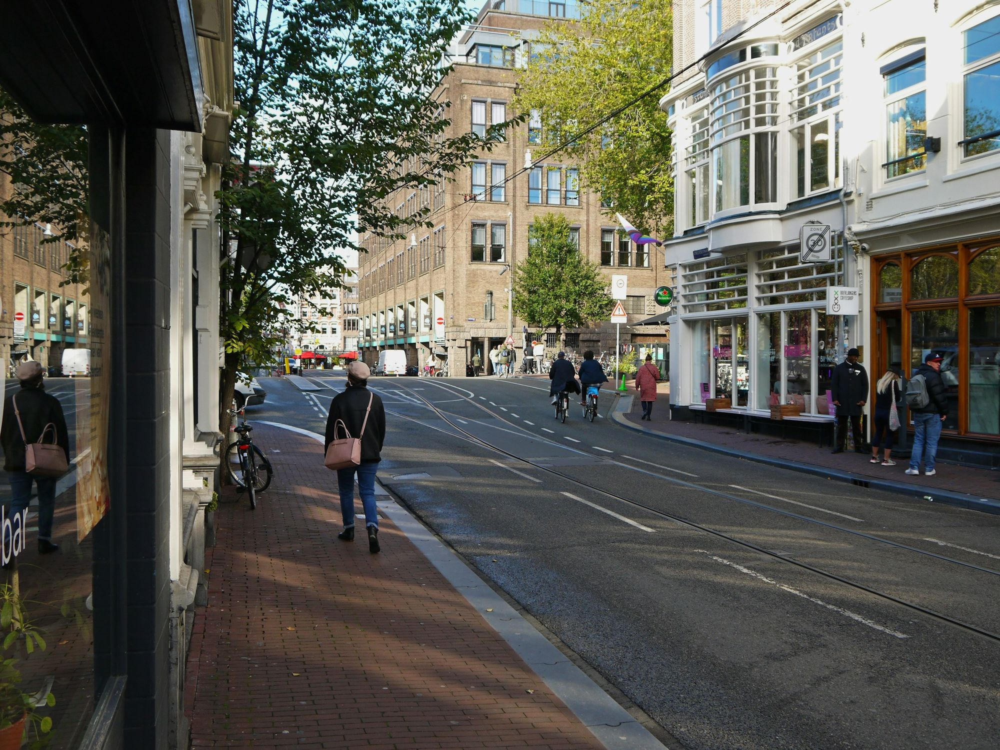